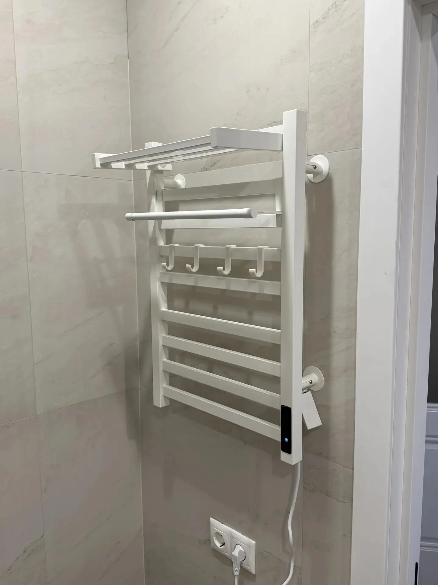
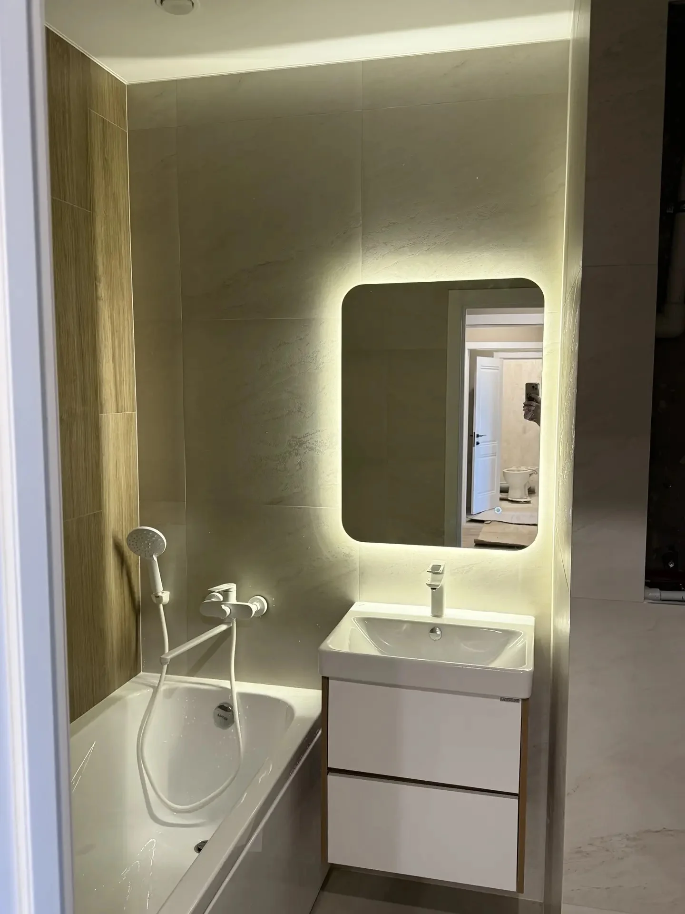
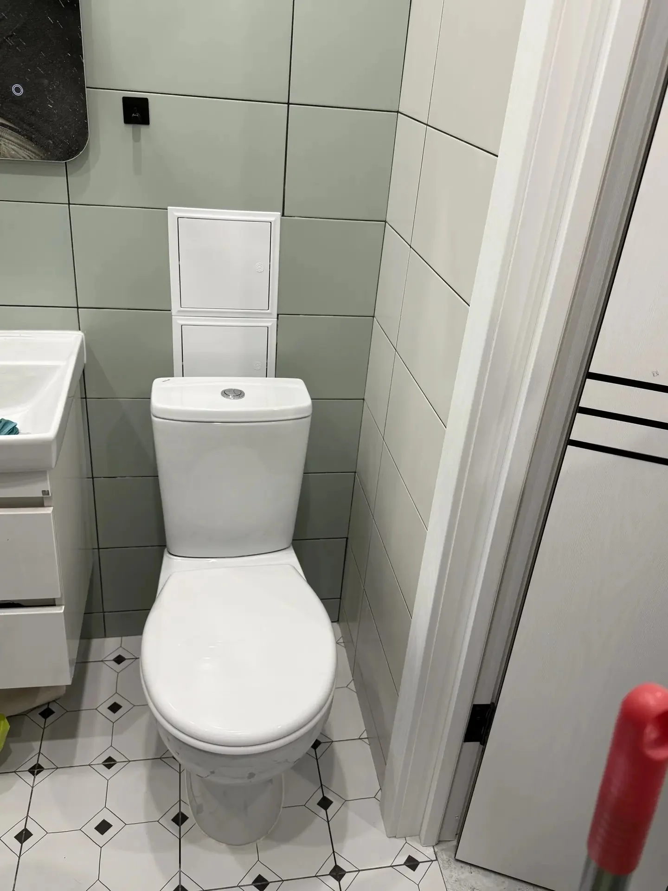

Выполняю профессиональное подключение бытовой техники и сантехнического оборудования в квартирах, домах и коммерческих помещениях Воронежа. Работаю без посредников более 12 лет и гарантирую качественный монтаж согласно техническим требованиям производителей оборудования.
Выполняю установку унитазов, раковин, ванн, полотенцесушителей, водонагревателей, стиральных и посудомоечных машин. При необходимости выполняется доработка коммуникаций, замена труб и подключение дополнительной запорной арматуры.
Полный спектр работ по установке и подключению сантехники и оборудования
Не нашли нужную услугу? Позвоните — решу любую задачу!
📞 +7 (950) 754-25-49
Установка и подключение полотенцесушителя с проверкой герметичности соединений.

Комплексная установка ванны, раковины и зеркала в ванной комнате.

Монтаж и подключение унитаза с настройкой сливной арматуры.
Ответы на популярные вопросы клиентов
Стоимость зависит от типа оборудования и сложности монтажа. После консультации по телефону или осмотра объекта сообщаю точную цену до начала работ.
Да. Во многих случаях могу приехать в день обращения. Срочные заявки обрабатываются в первую очередь.
Да. На все выполненные работы предоставляется гарантия. Используются качественные материалы и проверенные технологии монтажа.
Да. Подскажу какие трубы, фитинги, смесители, водонагреватели и комплектующие лучше выбрать, чтобы не переплачивать и получить надежный результат. По желанию заказчика могу сам закупить нужные материалы.
Нет. Выполняю сантехнические работы в квартирах, частных домах, коттеджах, офисах, магазинах и других помещениях.
Большинство работ выполняется за 1–3 часа. Более сложные проекты, связанные с заменой труб или комплексным монтажом сантехники, могут занимать больше времени.
Работаю по всему городу. Среднее время приезда — 30 - 90 минут.
Позвоните прямо сейчас и получите консультацию по стоимости работ.
📞 +7 (950) 754-25-49